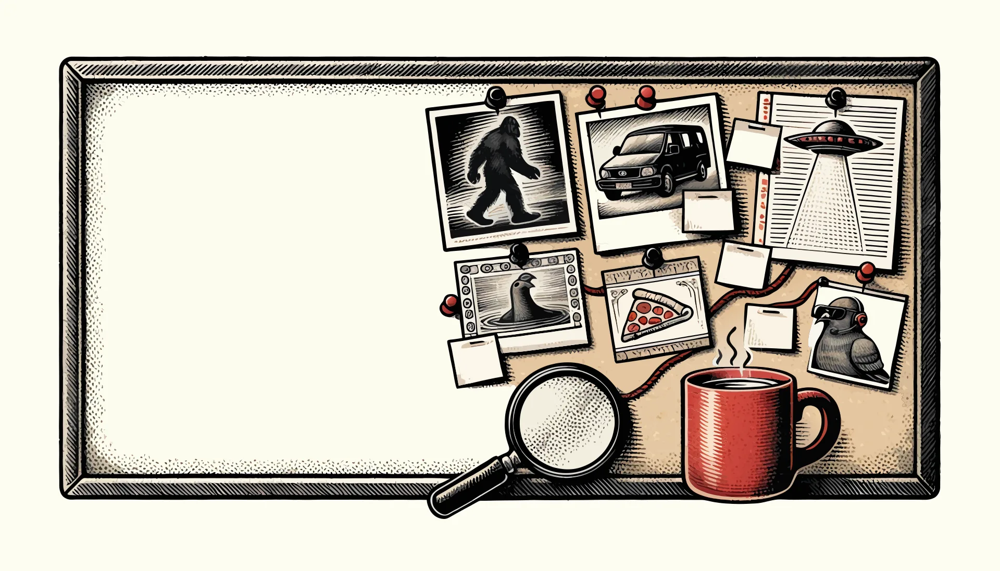
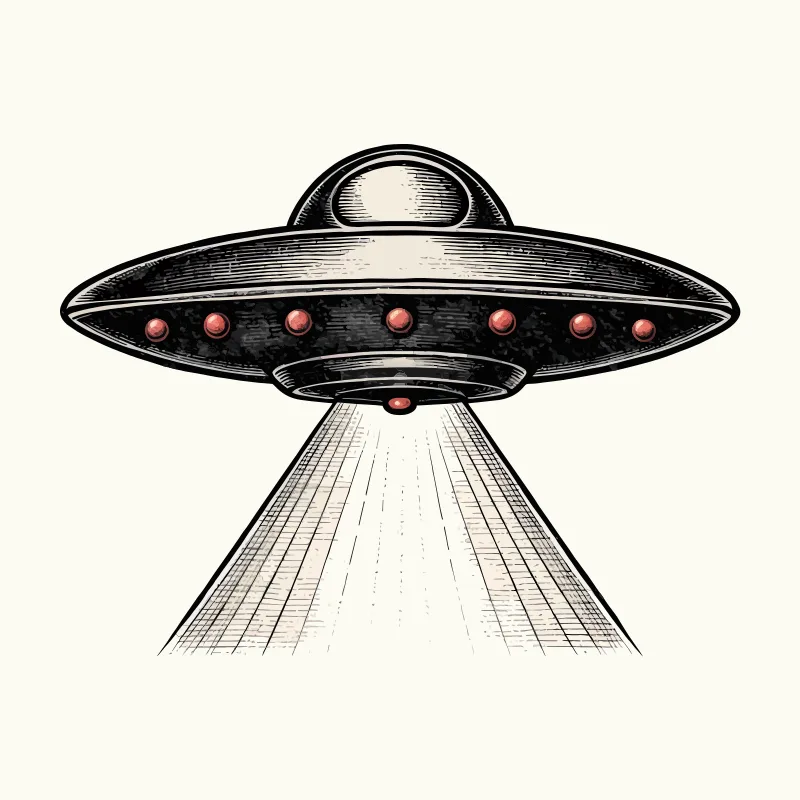

CASE 003

Area 51 and Roswell
A real test range, a 1947 press release, and a gift shop’s worth of guesses. Playful folklore, not a thriller.
Suspicion meter
71% — The base is real. The souvenir aliens are extra.
Evidence
- On July 8, 1947, Roswell Army Air Field said it had recovered a “flying disc,” then said the debris was a weather balloon.
- Air Force reports in the 1990s said the debris matched Project Mogul balloon trains.
- The CIA’s 2013 declassified history of the U-2 describes Area 51 as a flight-test site in Nevada.
The public record, lightly
- Roswell, New Mexico, and the Nevada Test and Training Range are real places you can find on a map.
- The Air Force reports are public documents. They do not confirm a captured crew.
How to use this at your party
Make name badges that say TEST PILOT or WEATHER BALLOON. Let guests pick a side, then serve chips.
Roswell field guide · Area 51 field guide · alien kit, $11.99